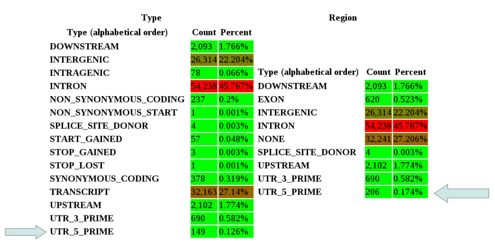

FAQ index
Install
- System requirements
- How do I Install it?
- How is it licensed?
- Where is the source code?
- Can you explain the configuration file?
- How do I get the same web interface you show in the main page?
Run
- How do I run snpEff?
- Command line options
- Why does it take a some seconds to start?
- Why do I get an "OutOfMemory" error?
- I sequenced a genome, how do I analyze the variants?
Input file formats
- What is the input format like?
- How do I represent a heterozygous SNP? (TXT format)
Output file formats
- What is the VCF output format like?
- What is the TXT output format like?
- What effects are predicted?
- How is impact categorized? (VCF output)
- Why do I see the same SNP in different output lines? (TXT output format)
- I only want result that intersect some intervals, how do I do that?
- What is the stats file?
- What does the 'degeneracy' column mean (in the TXT output)?
- What happened to the Hom/Het field (TXT output)?
- What is a rare amino acid (RARE_AMINO_ACID effect)?
- Why are TXT and VCF coordinates different?
- The total number of XXX effects in the summary does not match with the output file
- What is the adecuate output for GATK?
- How it 'loss of function' / 'nonsense-mediated decay' used?
Output summary page
- "Effects by type" vs "Effects by region"?
Building databases / Supporting new genomes
- Where is the human genome?
- Which genomes are supported?
- How do I add support for XXX genome? How do I build a database?
- How do I add support for regulatory annotations?
- How do I add another codon table?
- When I build the database using GFF 3 it says that Exons don't have sequences
- When building a database, I get zero protein coding genes
- When building a database, I get too many warnings
Unexpected results
- Why are coordinates changed in InDels?
- When I look at the UCSC borwser for hg19, it doesn't match the information from snpEff?
- When I run SnpEff from GATK I only get one effect!
- Why SnpEff is reporting an effect that doesn't match ENSEMBL (web)?
- Why is snpEff reporting a SYNONYMOUS and a NON_SYNONYMOUS effect on te same gene?
Other utilities
- SnpEff countReads: Counting how many reads / bases from a BAM file hit a gene, transcript, exon, intron, etc.
Troubleshooting
- I get an OutOfMemoryError
- I get an InvalidClassException
Background
Typical usage :
What is a variant? Does snpEff support variants?
A variant can be either a SNP (single-nucleotide polymorphism), an InDel (insertion or deletion) or a MNP (multiple-nucleotide polymorphism).What organisms does it support?
So far we support over 260 genome versions and the number is growing. If you have problems adding you own organism, send me an email and I'll be happy to support the organism of your choice."A program for annotating and predicting the effects of single nucleotide polymorphisms, SnpEff: SNPs in the genome of Drosophila melanogaster strain w1118; iso-2; iso-3", Cingolani, P. and Platts, A. and Coon, M. and Nguyen, T. and Wang, L. and Land, S.J. and Lu, X. and Ruden, D.M., Fly, 6, 2, 2012.
BibTex:
@article{cingolani2012program,
title={A program for annotating and predicting the effects of single nucleotide polymorphisms, SnpEff: SNPs in the genome of Drosophila melanogaster strain w1118; iso-2; iso-3},
author={Cingolani, P. and Platts, A. and Coon, M. and Nguyen, T. and Wang, L. and Land, S.J. and Lu, X. and Ruden, D.M.},
journal={Fly},
volume={6},
number={2},
pages={0--1},
year={2012}
}
Thank you!
Install
svn co https://snpeff.svn.sourceforge.net/svnroot/snpeff/SnpEffect/trunk
Can you explain the configuration file?
The file snpEff.config has some configuration parameters, which are explained in the comments in the config file, so I won't repeat the explanation here :-)Most of the time you do not need to change anything except for "data_dir" parameter, which points to the "data" directory where you installed the tool (i.e. path/to/your/intall/snpEff/data).
How do I get the same web interface you show in the main page?
That is the Galaxy project. You can either install your own server and add the snpEff tool or use it in an open Galaxy server.Run
cd snpEff java -jar ./snpEff.jar dm3 snps_dm3_demo.txtMore detailed example: Let's say you have a list of human SNPs in a file "snps.txt" and you want to analyze the effects that those mutations produce. In order to run the command line version of this tool, you can do:
# Run this from snpEff directory java snpEff.jar hg37 path/to/your/files/snps.txtYou can specify a configuration file by doing:
java snpEff.jar -c path/to/snpEff.config hg37 path/to/your/files/snps.txtIn order to see all available options, you can run
java -jar snpEff.jar -helpAlso, take a look at the manual page.
Why does it take a some seconds to start?
snpEff has to load the database before starting to analyze your SNPs. Usually it takes 15 to 30 seconds (depending on which database, how powerful your computer is, etc.). After that, it can analyze thousands of SNPs per second.Why do I get an "OutOfMemory" error?
You should probably use more memory in you java virtual machine. You can do this by using the "-XmX" option. E.g. in this case I use 4Gb:# Run this from snpEff directory java -Xmx4G snpEff.jar hg37 path/to/your/files/snps.txtNote: There is no space between "-Xmx" and "4G".
I sequenced a genome, how do I analyze the variants?
This is an extremelly simplified version on how to analyze the data from scratch (this is not meant to be a tutorial on sequencing analysis).Let's assume you have sequence data in FASTQ format (file "s.fastq") and your reference genome is dm5.34
# Download the genome wget ftp://ftp.flybase.net/genomes/Drosophila_melanogaster/dmel_r5.34_FB2011_02/fasta/dmel-all-chromosome-r5.34.fasta.gz gunzip dmel-all-chromosome-r5.34.fasta.gz mv dmel-all-chromosome-r5.34.fasta dm5.34.fasta # Create a genome index (we assume you installed BWA http://bio-bwa.sourceforge.net/) bwa index -bwtsw dm5.34.fasta # Map sequences to the genome: Create SAI file bwa aln -bwtsw dm5.34.fasta s.fastq > s.sai # Map sequences to the genome: Create SAM file bwa samse dm5.34.fasta s.sai s.fastq > s.sam # Create BAM file (we assume you installed SamTools http://samtools.sourceforge.net/) samtools view -S -b s.sam > s.bam # Sort BAM file (will create s_sort.bam) samtools sort s.bam s_sort # Create VCF file (BcfTools is part of samtools distribution) samtools mpileup -uf dm5.34.fasta s_sort.bam | bcftools view -vcg - > s.vcf # Analyze variants using snpEff java -Xmx4g -jar snpEff.jar -vcf4 dm5.34 s.vcf > s_snpeff.txt
Input file formats
What is the input format like?
Since version 2.0 the default input format is variant call format (VCF). This is the format used by the "1000 Genomes Project".Obsolete input formats: Pileup and TXT. The use of Pileup and TXT input formats is discouraged and support may be discontinued in the future.
Pileup: Since version 1.4 you can also use pileup format from SamTools by setting the "-pileup" option in the command line. Please note that we use a pileup version with calls (not the basic one).
WARNING: This format is deprecated, not only in SnpEff but also in SAMTools.
TXT: The format was changed since version 1.4 in order to allow heterozygous insertions and deletions.
WARNING: This format is deprecated.
The file format must be tab-separated, containing columns that correspond to:
5 140532 T C + 12 1017956 T A + 45 12 2 946507 G C + 23 8 14 19584687 C T - 19 66520 G -G/-G + 8 150029 A */+T +
How do I represent a heterozygous SNP? (TXT format)
WARNING: TXT format is deprecated, you should use VCF insted.When representing a heterozygous SNP you should use IUB codes: M=A/C, R=A/G, W=A/T, S=C/G, Y=C/T and K=G/T. Indels are indicated by, for example, */+A, -A/* or +CC/-C. There is no difference between */+A or +A/*.
Output file formats
What is the VCF output format like?
VCF is the default output format. It is highly recomended to use VCF as input and output format, since it is a standard format that can be also used by other tools and software packages. Thus VCF makes it much easier to integrate genomic data processing pipelines.Effects information is added to the INFO field. There can be multiple effects separated by comma. The format for each effect is:
Effect ( Effefct_Impact | Codon_Change | Amino_Acid_change | Gene_Name | Gene_BioType | Coding | Transcript | Exon [ | ERRORS | WARNINGS ] )
| Sub-field | Notes |
|---|---|
| Effect | Effect of this variant. See details here. |
| Effect impact | Effect impact {High, Moderate, Low, Modifier}. See details here. |
| Functional class | Functional class {NONE, SILENT, MISSENSE, NONSENSE}. |
| Codon_Change | Codon change: old_codon/new_codon |
| Amino_Acid_change | Amino acid change: old_AA AA_position/new_AA (e.g. 'E30K') |
| Amino_Acid_length | Length of protein in amino acids (actually, transcription length divided by 3). |
| Gene_name | Gene name |
| Transcript_bioType | Transcript bioType, if available. |
| Gene_Coding | [CODING | NON_CODING]. This field is 'CODING' if any transcript of the gene is marked as protein codin. |
| Trancript | Transcript ID (usually ENSEMBL IDs) |
| Exon | Exon ID (usually ENSEMBL IDs) |
| Warnings | Any warnings or errors (not shown if empty). |
The following meta-information lines are added to the header:
##SnpEffVersion="SnpEff program version" ##SnpEffCmd="Command line arguments used to run the program" ##INFO=<ID=EFF,Number=.,Type=String,Description="Predicted effects for this variant.Format: 'Effect ( Effect_Impact | Functional_Class | Codon_Change | Amino_Acid_change| Amino_Acid_length | Gene_Name | Gene_BioType | Coding | Transcript | Exon [ | ERRORS | WARNINGS ] )' \">
What is the TXT output format like?
WARNING: TXT output is now deprecated. Since version 2.0 VCF format is supported and recommended as output format (see previous question).
The TXT output format consist of one line per effect. This means that you usually get more than one line per SNP since the same SNP may affect several different transcripts in the same gene.
The format is tab separated columns:
| Column | Notes |
|---|---|
| Chromosome | Chromosome name (usually without any leading 'chr' string) |
| Position | One based position |
| Reference | Reference |
| Change | Sequence change |
| Change type | Type of change {SNP, MNP, INS, DEL} |
| Homozygous | Is this homozygous or heterozygous {Hom, Het} |
| Quality | Quality score (from input file) |
| Coverage | Coverage (from input file) |
| Warnings | Any warnings or errors. |
| Gene_ID | Gene ID (usually ENSEMBL) |
| Gene_name | Gene name |
| Bio_type | BioType, as reported by ENSEMBL. |
| Trancript_ID | Transcript ID (usually ENSEMBL) |
| Exon_ID | Exon ID (usually ENSEMBL) |
| Exon_Rank | Exon number on a transcript |
| Effect | Effect of this variant. See details below. |
| old_AA/new_AA | Amino acid change |
| old_codon/new_codon | Codon change |
| Codon_Num(CDS) | Codon number in CDS |
| Codon_degenaracy | Codon degenaracy (see below). |
| CDS_size | CDS size in bases |
| Custom_interval_ID | If any custom interval was used, add the IDs here (may be more than one). |
This is an example of an output file:
chr2L 35041 T K SNP Het 50 FBgn0051973 Cda5 FBtr0078164 FBgn0051973:11 11 SYNONYMOUS_CODING Q/Q CAA/CAA 332 5997
chr2L 35041 T K SNP Het 50 FBgn0051973 Cda5 FBtr0078163 FBgn0051973:11 11 NON_SYNONYMOUS_CODING Q/H CAA/CAC 332 3120
chr2L 200401 C Y SNP Het 228 FBgn0016977 spen FBtr0078121 CG18497:10 10 STOP_GAINED Y/* TAC/TAG 5240 16602
chr2L 194601 C Y SNP Het 228 FBgn0016977 spen FBtr0078122 CG18497:6 6 NON_SYNONYMOUS_CODING P/A CCG/GCG 3473 16683
chr2L 779563 A R SNP Het 168 FBgn0031277 CG13947 FBtr0078005 FBgn0031277:1 1 STOP_LOST */Y TAA/TAC 120 360
chr2L 856021 * +CGGAGGAGG/* INS Het 267 FBgn0031288 CG13949 FBtr0078017 FBgn0031288:3 3 FRAME_SHIFT 118 438
chr2L 856890 C Y SNP Het 201 FBgn0029095 aru FBtr0078031 DOWNSTREAM: 43 bases
chr2L 871556 G R SNP Het 228 FBgn0053526 PNUTS FBtr0091487 CG33526:2 2 5PRIME_UTR: 18 bases from TSS
chr2L 878267 T W SNP Het 228 WARNING: Base is 'G' but SNP says 'T'. FBgn0031292 CG15824 FBtr0078029 CG15824:14 14 3PRIME_UTR: 14 bases from transcript end
| Effect | Note | Example |
|---|---|---|
| INTERGENIC | The variant is in an intergenic region | |
| UPSTREAM | Upstream of a gene (default length: 5K bases) | |
| UTR_5_PRIME | Variant hits 5'UTR region | |
| UTR_5_DELETED | The variant deletes and exon which is in the 5'UTR of the transcript | |
| START_GAINED | A variant in 5'UTR region produces a three base sequence that can be a START codon. | |
| SPLICE_SITE_ACCEPTOR | The variant hits a splice acceptor site (defined as two bases before exon start, except for the first exon). | |
| SPLICE_SITE_DONOR | The variant hits a Splice donor site (defined as two bases after coding exon end, except for the last exon). | |
| START_LOST | Variant causes start codon to be mutated into a non-start codon. | aTg/aGg, M/R |
| SYNONYMOUS_START | Variant causes start codon to be mutated into another start codon. | Ttg/Ctg, L/L (TTG and CTG can be START codons) |
| CDS | The variant hits a CDS. | |
| GENE | The variant hits a gene. | |
| TRANSCRIPT | The variant hits a transcript. | |
| EXON | The vairant hist an exon. | |
| EXON_DELETED | A deletion removes the whole exon. | |
| NON_SYNONYMOUS_CODING | Variant causes a codon that produces a different amino acid | Tgg/Cgg, W/R |
| SYNONYMOUS_CODING | Variant causes a codon that produces the same amino acid | Ttg/Ctg, L/L |
| FRAME_SHIFT | Insertion or deletion causes a frame shift | An indel size is not multple of 3 |
| CODON_CHANGE | One or many codons are changed | An MNP of size multiple of 3 |
| CODON_INSERTION | One or many codons are inserted | An insert multiple of three in a codon boundary |
| CODON_CHANGE_PLUS_CODON_INSERTION | One codon is changed and one or many codons are inserted | An insert of size multiple of three, not at codon boundary |
| CODON_DELETION | One or many codons are deleted | A deletion multiple of three at codon boundary |
| CODON_CHANGE_PLUS_CODON_DELETION | One codon is changed and one or more codons are deleted | A deletion of size multiple of three, not at codon boundary |
| STOP_GAINED | Variant causes a STOP codon | Cag/Tag, Q/* |
| SYNONYMOUS_STOP | Variant causes stop codon to be mutated into another stop codon. | taA/taG, */* |
| STOP_LOST | Variant causes stop codon to be mutated into a non-stop codon | Tga/Cga, */R |
| INTRON | Variant hist and intron. Technically, hits no exon in the transcript. | |
| UTR_3_PRIME | Variant hits 3'UTR region | |
| UTR_3_DELETED | The variant deletes and exon which is in the 3'UTR of the transcript | |
| DOWNSTREAM | Downstream of a gene (default length: 5K bases) | |
| INTRON_CONSERVED | The variant is in a highly conserved intronic region | |
| INTERGENIC_CONSERVED | The variant is in a highly conserved intergenic region | |
| INTRAGENIC | The variant hits a gene, but no transcripts within the gene | |
| RARE_AMINO_ACID | The variant hits a rare amino acid thus is likely to produce protein loss of function | |
| NON_SYNONYMOUS_START | Variant causes start codon to be mutated into another start codon (the new codon produces a different AA). | Atg/Ctg, M/L (ATG and CTG can be START codons) |
How is impact categorized? (VCF output)
Efefcts are categorized by 'impact': {High, Moderate, Low, Modifier}. The categories are as follows:
| Impact | Effects |
|---|---|
| High |
SPLICE_SITE_ACCEPTOR SPLICE_SITE_DONOR START_LOST EXON_DELETED FRAME_SHIFT STOP_GAINED STOP_LOST RARE_AMINO_ACID |
| Moderate |
NON_SYNONYMOUS_CODING CODON_CHANGE CODON_INSERTION CODON_CHANGE_PLUS_CODON_INSERTION CODON_DELETION CODON_CHANGE_PLUS_CODON_DELETION UTR_5_DELETED UTR_3_DELETED |
| Low |
SYNONYMOUS_START NON_SYNONYMOUS_START START_GAINED SYNONYMOUS_CODING SYNONYMOUS_STOP |
| Modifier |
UTR_5_PRIME UTR_3_PRIME REGULATION UPSTREAM DOWNSTREAM GENE TRANSCRIPT EXON INTRON_CONSERVED INTRON INTRAGENIC INTERGENIC INTERGENIC_CONSERVED NONE CHROMOSOME CUSTOM CDS |
Why do I see the same SNP in different output lines? (TXT output format)
When using TXT output format, there is one effect per line. You usually get more than one line per variant since the same variant may affect several different transcripts in the same gene.I only want result that intersect some intervals, how do I do that?
You can use the '-fi' option (a.k.a. '-filterInterval). For instance, let's assume you have and interval file 'intervals.bed':2L 10000 10999 2L 12000 12999 2L 14000 14999 2L 16000 16999 2L 18000 18999In order to get only changes that match you intervals, you can use the command:
java -Xmx4G -jar snpEff.jar -fi intervals.bed dm5.30 file.vcfNote: You may specify multiple files by using '-fi' many times. They program performs some statistics and saves them to the file 'snpEff_summary.html' on the directory where snpEff is being executed. You can see the file, by opeining it in your browser. You can change the default location by using the '-stats' command line option.
E.g.: In the stats file, you can see coverage histogram plots like this one
What does the 'degeneracy' column mean (in the TXT output)?
Here is an explanation form Stephen Wright (Univ. Toronto), who requested to add this feature"...a fourfold degenerate site would be a site where any change is synonymous. So the third codon position for the arginine CGN, is a fourfold degenerate site, as is the third codon position for valine, alanine, etc. Similarly, all second positions of a codon are zerofold degenerate, since any change is nonsynonymous. Many first codon positions are also zerofold degenerate, however, for example, the first codon position of AGG is NOT zerofold, because a shift to CGG is a synonymous change."
What happened to the Hom/Het field (TXT output)?
In older formats, there used to be one sample per file, so identifying Hom/Het in a per variant basis made sense.In VCF files, where many samples are analyzed simultaneously, identification of Hom/Het should be done in a per sample basis instead of per variant basis. In an attempt to output that field I used a majority vote (i.e. if most samples are Hom, I output Hom, otherwise, Het). This is not strictly correct and, it may also be confusing.
For this reason, the output is empty when using multi-sample files, such as VCF. Unless the file contains only one sample (i.e. only one genotype field)
What is a rare amino acid (RARE_AMINO_ACID effect)?
These are amino acids that occurs very rarely in an organism. For instance, humans are supposed to use 20 amino acids, but there is also one rare AA. Selenocysteine, single letter code 'U', appears roughly 100 times in the whole genome. The amino acid is so rare that usually it does not appear in codon translation tables. It is encoded as UGA, which , under normal conditions, is a STOP codon. Secondary RNA structures are assumed to enable this special translation.A variant in one of these sites is likely to cause a loss of function in the protein. E.g. in case of a Selenocysteine, a loss of a selenium molecule is likely to cause loss of function. Put it simply, the assumption is that there is a great deal of trouble to get that non-standard amino acid there, so it must be important.
RARE_AMINO_ACID mark is used to show that special attention should be paid in these cases.
WARNING: When the variant hits a RARE_AMINO_ACID mark, it is likely that the 'old_AA/new_AA' field will be incorrect. This may happen because the amino acid is not predictable using the codon table.
Why are TXT and VCF coordinates different?
Sometimes VCF files have a coordinate that does not start were the variant is. Here is an example:VCF line: "chr10 102770293 . tgctgcggctgcggctgcggctacggctgcggct tGCTGCGgctgcggctgcggctgcggctacggctgcggct" INS reported by SnpEff: "chr10 102770315 * +GCGGCT INS"
At first glace, these two look different, since 102770293 is not the same as 102770315. But if you look at the sequences:
tgctgcggctgcggctgcggct acggctgcggct REF (from VCF file)
|||||||||||||||||||||| ||||||||||||
tgctgcggctgcggctgcggctgcggctacggctgcggct ALT (from VCF file)
| | | ||||||
| | | gcggct INS (reported by SnpEff TXT format)
| | | |
102770293 | | Position (VCF)
| | |
102770300 | |
| |
102770310
|
102770315 Position (TXT)
So the two VCF and TXT representations are equivalent.
The total number of XXX effects in the summary does not match with the output file
Some people try to count the number of effects in a file by doing (assuming we want to count how many MODIFIER efefcts we have): grep -o MODIFIER output.eff.vcf | wc -l .cat output.eff.vcf | cut -f 8 | tr ";" "\n" | grep ^EFF= | cut -f 2 -d = | tr "," "\n" | grep MODIFIER | wc -lBrief explanation:
| cut -f 8 | Extract INFO fields |
| tr ";" "\n" | Expand each field into one line |
| grep ^EFF= | Only keep 'EFF' fields |
| cut -f 2 -d = | Keep only the effect data (drop the 'EFF=' part) |
| tr "," "\n" | Expand effects to multiple lines |
| grep MODIFIER | wc -l | Count the ones you want (in this example 'MODIFIER') |
What is the adecuate output for GATK?
You should use the '-o gatk' command line option to avoid problems. The reason is that, even though GATK uses VCF, but sometimes new formats of the 'EFF' info field might cause trouble. This happens when switching from SnpEff v2.X to SnpEff v3.0, since the latest GATK version still uses an older format.How it 'loss of function' / 'nonsense-mediated decay' used?
Take a look at these slidesOutput summary page
"Effects by type" vs "Effects by region"
SnpEff annotates variants. Variants produce effect of difference "types" (e.g. NON_SYNONYMOUS_CODING, STOP_GAINED). These variants affect regions of the genome (e.g. EXON, INTRON).The two tables count how many effects for each type and for each region exists.
E.g.: In an EXON region, you can have all the following effect types: NON_SYNONYMOUS_CODING, SYNONYMOUS_CODING, FRAME_SHIFT, STOP_GAINED, etc.
The complicated part is that some effect types affect a region that has the same name (yes, I know, this is confusing).
E.g.: In a UTR_5_PRIME region you can have UTR_5_PRIME and START_GAINED effect type.
This means that the number of both tables are not exactly the same, because the labels don't mean the same.
See the next figure as an example

So the number of effects that affect a UTR_5_PRIME region is 206. Of those, 57 are effects type START_GAINED and 149 are effects type UTR_5_PRIME.
How exactly are effect type and effect region related? See the following table
| Effect Type | ..affect Region |
|---|---|
|
NONE CHROMOSOME CUSTOM CDS |
NONE |
|
INTERGENIC INTERGENIC_CONSERVED |
INTERGENIC |
|
UPSTREAM |
UPSTREAM |
|
UTR_5_PRIME UTR_5_DELETED START_GAINED |
UTR_5_PRIME |
|
SPLICE_SITE_ACCEPTOR |
SPLICE_SITE_ACCEPTOR |
|
SPLICE_SITE_DONOR |
SPLICE_SITE_DONOR |
|
INTRAGENIC START_LOST SYNONYMOUS_START NON_SYNONYMOUS_START GENE TRANSCRIPT |
EXON or NONE |
|
EXON EXON_DELETED NON_SYNONYMOUS_CODING SYNONYMOUS_CODING FRAME_SHIFT CODON_CHANGE CODON_INSERTION CODON_CHANGE_PLUS_CODON_INSERTION CODON_DELETION CODON_CHANGE_PLUS_CODON_DELETION STOP_GAINED SYNONYMOUS_STOP STOP_LOST RARE_AMINO_ACID |
EXON |
|
INTRON INTRON_CONSERVED |
INTRON |
|
UTR_3_PRIME UTR_3_DELETED |
UTR_3_PRIME |
|
DOWNSTREAM |
DOWNSTREAM |
|
REGULATION |
REGULATION |
Supporting genomes
How do I build add support for XXX genome? How do I build a database?
Here is a detailed, step by step explanation.How do I add support for regulatory annotations?
Here is a detailed, step by step explanation.How do I add another codon table?
You have to edit thesnpEff.config file and add a parameter "codon.Name_of_your_codon_table" followed by a comma separaated list of "CODON/AMINO_ACID". E.g.:
codon.Invertebrate_Mitochondrial: TTT/F, TTC/F, TAC/Y, TAA/*, ATG/M+, ATG/M+, ACT/T, ...Note that codons marked with '*' are STOP codons and codons marked with a '+' are START codons.
dm3.M.codonTable : Invertebrate_Mitochondrial...of course, chromosome 'M' is not a real chromosome, it is just a way to mark the sequence as mitochondrial DNA.
When I build the database using GFF 3 it says that Exons don't have sequences
GFF3 files can have sequence information either in the same file or in a separate fasta file.In order to add sequence information in the GFF file, you can do this:
cat annotations.gff > genes.gff echo "###" >> genes.gff echo "##FASTA" >> genes.gff cat sequence.fa >> genes.gff
When building a database, I get zero protein coding genes
When building a database, snpEff tries to find which transcripts are protein coding. This is done using the 'bioType' information.When building a database, I get too many warnings
There are plenty of GFF and GTF files that, unfortunately, do not follow the specification. SnpEff usually complains about this, but tries hard to correct the problems. So the database may be OK even after you see many warnings.java -jar snpEff.jar dump myGenome | less
Unexpected results
Why are coordinates changed in InDels?
This is not a bug, just a feature of VCF input files. Suppose that you have an InDel like this one10 7797903 . CAACTA CAACTAACTA 214 . INDEL;DP=94;AF1=1;AC1=2;DP4=0,0,90,0;MQ=53;FQ=-290 GT:PL:GQ 1/1:255,255,0:99After running snpEff, you get an output like this
10 7797909 * +ACTA INS Hom 214 94 ENSG00000151657 KIN protein_coding ENST00000463666 exon_10_7797777_7798105 6 FRAME_SHIFT: ENST00000463666 699Although it may seem like a change of coordinated (from 7797903 to 7797909) it not. If you look at the sequences, the first 6 bases are the same (i.e. the VCF file says that the INDEL is "CAACTA / CAACTAACTA" at position 7797903). So the actual insertion is "ACTA" a position 7797903 + 6 = 7797909.
When I look at the UCSC borwser for hg19, it doesn't match the information from snpEff?
WARNING: Usage of hg19 genome is deprecated and discouraged, you should use GRChXX.YY instead
Reference sequence and annotations are made for an organism, version and sub-version.
For examples human genome, version 37, sub-version 63 would be called (GRCh37.63 or hg37.63 aka hg19.63).
UCSC doesn't specify sub-version.
They just say hg19.
This annoying sub-version problem appeared often and, having reproducibility of results in mind, I dropped UCSC annotations in favor of ENSEMBL ones (they have clear versioning).
When I run SnpEff from GATK I only get one effect!
Indeed, the GATK team decided to only report the highest impact effect. This was done intentionally for the sake of brevity, in a 'less is more' spirit.Why SnpEff is reporting an effect that doesn't match ENSEMBL (web)?
Please remember that databases are updated often (e.g. by ENSEMBL), so if you are using an old database, you might get different effects.For example, this transcript ENST00000487462 changed from protein_coding in GRCh37.63
1 protein_coding exon 1655388 1655458 . - . gene_id "ENSG00000008128"; transcript_id "ENST00000487462"; exon_number "1"; gene_name "CDK11A"; transcript_name "CDK11A-013"; 1 protein_coding exon 1653905 1654270 . - . gene_id "ENSG00000008128"; transcript_id "ENST00000487462"; exon_number "2"; gene_name "CDK11A"; transcript_name "CDK11A-013";...to processed_transcript in GRCh37.64:
1 processed_transcript exon 1655388 1655458 . - . gene_id "ENSG00000008128"; transcript_id "ENST00000487462"; exon_number "1"; gene_name "CDK11A"; gene_biotype "protein_coding"; transcript_name "CDK11A-013"; 1 processed_transcript exon 1653905 1654270 . - . gene_id "ENSG00000008128"; transcript_id "ENST00000487462"; exon_number "2"; gene_name "CDK11A"; gene_biotype "protein_coding"; transcript_name "CDK11A-013";This means that you'll get different results for this transcript using sub-version 63 or 64. I assume that latest versions are improved, so I always encourage to upgrade.
As I mentioned before it might even be the case that latest released dataabse and the one shown on the web interface may be out of sync.
Why is snpEff reporting a SYNONYMOUS and a NON_SYNONYMOUS effect on te same gene?
It is not uncommon for a gene to have more than one transcript (e.g. in human most genes have multiple transcripts). A variant (e.g. a SNP) might affect different transcripts in different ways, as a result of different reading frames.For instance:
chr5 137622242 . C T . . EFF=NON_SYNONYMOUS_CODING(MODERATE|MISSENSE|Gaa/Aaa|E/K|CDC25C|protein_coding|CODING|ENST00000514017|exon_5_137622186_137622319),
SYNONYMOUS_CODING(LOW|SILENT|caG/caA|Q|CDC25C|protein_coding|CODING|ENST00000323760|exon_5_137622186_137622319),
SYNONYMOUS_CODING(LOW|SILENT|caG/caA|Q|CDC25C|protein_coding|CODING|ENST00000348983|exon_5_137622186_137622319),
SYNONYMOUS_CODING(LOW|SILENT|caG/caA|Q|CDC25C|protein_coding|CODING|ENST00000356505|exon_5_137622186_137622319),
SYNONYMOUS_CODING(LOW|SILENT|caG/caA|Q|CDC25C|protein_coding|CODING|ENST00000357274|exon_5_137622186_137622319),
SYNONYMOUS_CODING(LOW|SILENT|caG/caA|Q|CDC25C|protein_coding|CODING|ENST00000415130|exon_5_137622186_137622319),
SYNONYMOUS_CODING(LOW|SILENT|caG/caA|Q|CDC25C|protein_coding|CODING|ENST00000513970|exon_5_137622186_137622319),
SYNONYMOUS_CODING(LOW|SILENT|caG/caA|Q|CDC25C|protein_coding|CODING|ENST00000514555|exon_5_137622186_137622319),
SYNONYMOUS_CODING(LOW|SILENT|caG/caA|Q|CDC25C|protein_coding|CODING|ENST00000534892|exon_5_137622186_137622319)
in this example (it was divided into multiple lines for legibility), the first transcript ENST0000051401 has a NON_SYNONYMOUS effect, but all other transcripts have a SYNONYMOUS effect.
Other utilities
java -Xmx4g -jar snpEff.jar countReads GRCh37.68 readsFile_1.bam readsFile_2.bam ... readsFile_N.bam > countReads.txt
The output is a TXT (tab-separated) file, that looks like this:
chr start end type IDs Reads:readsFile_1.bam Bases:readsFile_1.bam Reads:readsFile_2.bam Bases:readsFile_2.bam ... 1 1 11873 Intergenic DDX11L1 130 6631 50 2544 1 1 249250621 Chromosome 1 2527754 251120400 2969569 328173439 1 6874 11873 Upstream NR_046018;DDX11L1 130 6631 50 2544 1 9362 14361 Downstream NR_024540;WASH7P 243 13702 182 9279 1 11874 12227 Exon exon_1;NR_046018;DDX11L1 4 116 2 102 1 11874 14408 Gene DDX11L1 114 7121 135 6792 1 11874 14408 Transcript NR_046018;DDX11L1 114 7121 135 6792 1 12228 12229 SpliceSiteDonor exon_1;NR_046018;DDX11L1 3 6 0 0 1 12228 12612 Intron intron_1;NR_046018;DDX11L1 13 649 0 0 1 12611 12612 SpliceSiteAcceptor exon_2;NR_046018;DDX11L1 0 0 0 0 1 12613 12721 Exon exon_2;NR_046018;DDX11L1 3 24 1 51 1 12722 12723 SpliceSiteDonor exon_2;NR_046018;DDX11L1 3 6 0 0 1 12722 13220 Intron intron_2;NR_046018;DDX11L1 22 2110 20 987 1 13219 13220 SpliceSiteAcceptor exon_3;NR_046018;DDX11L1 5 10 1 2 1 13221 14408 Exon exon_3;NR_046018;DDX11L1 82 4222 113 5652 1 14362 14829 Exon exon_11;NR_024540;WASH7P 37 1830 7 357 1 14362 29370 Transcript NR_024540;WASH7P 704 37262 524 34377 1 14362 29370 Gene WASH7P 704 37262 524 34377 1 14409 19408 Downstream NR_046018;DDX11L1 122 7633 39 4254The columns are:
Troubleshooting
java -Xmx4G -jar snpEff.jar eff -v GRCh37.64 variants.vcfNote that the amount of memory ("4G") is not separated by a space from the '-Xmx'. Be carefull not to exced the amount of physical memory on your computer, otherwise the process will start swaping to disc (you don't want that).
I get an InvalidClassException
This usually means that you are trying to use a database from another version . Binary databases are not backwards compatible (I hope to fix this soon).$ java -Xmx64M -jar snpEff.jar snpEff version 2.0.4 (build 2011-10-08), by Pablo Cingolani Usage: snpEff [eff] [options] genome_version snp_file or: snpEff build [options] genome_version or: snpEff dump [options] genome_version or: snpEff cds [options] genome_version